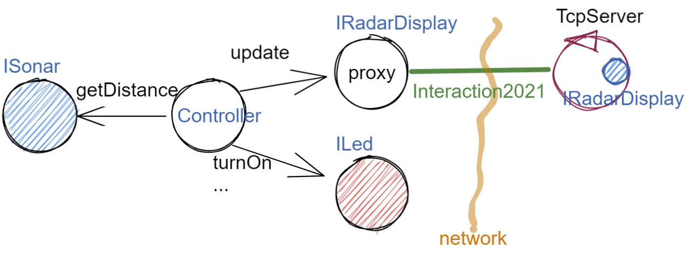

Supporti per comunicazioni¶
Il secondo punto del piano di lavoro (si veda Piano di lavoro) prevede:
definizione di alcuni supporti TCP per componenti lato client e lato server, con l’obiettivo di formare un insieme riusabile anche in applicazioni future;
Abbiamo detto che la creazione di questi supporti non è indispensabile, ma può costituire un elemento strategico a livello aziendale, per evitare di rifare ogni volta il codice che permette di scambiare informazioni via rete.
Inizieremo focalizzando l’attenzione sul protocollo TCP, per verificare poi, al termine del lavoro, la possibilità di estendere anche ad altri protocolli i supporti creati.
il software dei supporti sarà scritto in un progetto dedicato it.unibo.comm2022
Il programma di lavoro può essere così riassunto:
Definizione di un supporto (TcpClientSupport) che permette la connessione TCP con un server remoto e l’invio-ricezione di messaggi usando un oggetto-connessione che implementa Interaction2021.
Definizione di una interfaccia (IApplMsgHandler) che costituisce il ‘contratto’ tra il Server e il codice applicativo.
Definizione di un supporto (TCP Server) che riceve in ingresso un oggetto (
applHandler) che implementa IApplMsgHandler. Lo scopo del Server è accettare richieste di connessione da parte dei client.All’arrivo di una richiesta, il Server creae un oggetto (attivo) di classe TcpApplMessageHandler passandondogli l’
applHandlere la connessione (di tipo Interaction2021) appena stabilita. Questo oggetto attende messaggi sulla connessione e ne delega la gestione all’applHandler.Definizione di una classe astratta ApplMsgHandler che implementa IApplMsgHandler delegando a classi specializzate la gestione di un messaggio ricevuto, in modo che l’Application Designer possa ignorare completamente i dettagli relativi alla comunicazione, avendo al contempo la possibilità di invocare un metodo che invia informazioni (risposte) al caller (clent remoto).
{kind=link}
Finita questa parte di lavoro, realizzeremo due diverse configurazioni del RadarSystem:
RadarDisplay su PC¶
{kind=link}
Si veda SPRINT2: RadarSystem distribuito
Controller e RadarDisplay su PC¶

Si veda sprint2a
TcpClientSupport¶
Introduciamo la classe TcpClientSupport con cui istanziare oggetti che stabilisccono una connessione
su un data coppia IP,Port. Il metodo static connect restiruisce un oggetto
che implementa l’interfaccia Interaction2021
e che potrà essere usato per inviare-ricevere messaggi sulla connessione.
public class TcpClientSupport {
public static Interaction2021 connect(
String host,int port,int nattempts) throws Exception{
for( int i=1; i<=nattempts; i++ ) {
try {
Socket socket = new Socket( host, port );
Interaction2021 conn = new TcpConnection( socket );
return conn;
}catch(Exception e) {
Colors.out("Attempt to connect:" + host + " port=" + port);
Thread.sleep(500);
}
}//for
throw new Exception("Unable to connect to host:" + host);
}
}
Si noti che il client fa un certo numero di tentativi prima di segnalare la impossibilità di connessione.
TcpConnection implementa Interaction2021¶
La classe TcpConnection costituisce una implementazione della interfaccia
Interaction2021
e quindi realizza i metodi di supporto per la ricezione e la trasmissione di
messaggi applicativi sulla connessione fornita da una Socket.
public class TcpConnection implements Interaction2021{
...
public TcpConnection( Socket socket ) throws Exception { ... }
Le implementazione delle operazioni si riduce alla scrittura/lettura di informazione sulla Socket e si rimanda quindi direttamente al codice.
TCP Server¶
Alla semplicità del supporto lato client si contrappone una maggior complessità lato server, in quanto occorre:
permettere di stabilire connenessioni con più client;
fare in modo che si stabilisca una diversa connessione con ciascun client;
fare in modo che i messaggi ricevuti su una specifica connessione siano elaborati da opportuno codice applicativo.
Il TCPServer non deve includere codice applicativo, ma USARLO.
Il TCPServer deve seguire regole fissate dal livello applicativo
Ricordando la proposta delle architetture port-adapter, decidiamo, come progettisti, di proseguire lo sviluppo del supporto con riferimento ad una architettura a livelli rappresentata come segue:

L’interfaccia IApplMsgHandler¶
Nel seguito, incapsuleremo il codice applicativo entro oggetti che implementano l’interfaccia
IApplMsgHandler.
public interface IApplMsgHandler {
public String getName();
public void elaborate( String message, Interaction2021 conn );
public void sendMsgToClient(String message, Interaction2021 conn);
public void sendAnswerToClient(String message,Interaction2021 conn);
}
Il costruttore del TCP server avrà quindi la seguente signature:
public TcpServer(String name,int port,IApplMsgHandler userDefHandler)
cioè riceverà un oggetto di livello applicativo (userDefHandler) capace di:
gestire i messaggi ricevuti sulla connessione Interaction2021 che il server avrà stabilito con i clienti
inviare risposte (o altri messagi) ai clienti sulla stessa connessione.
ApplMsgHandler implementa IApplMsgHandler¶
Per agevolare il lavoro dell’application designer, viene definita una classe astratta che
implementa la interfaccia IApplMsgHandler.
Questa classe realizza l’invio di messaggi ai clienti, ma
delega alle classi specializzate il compito di definire il metodo elaborate per la gestione
dei messaggi in ingresso.
public abstract class ApplMsgHandler implements IApplMsgHandler{
protected String name;
public ApplMsgHandler( String name ) { this.name = name; }
public Interaction2021 getName( ) { return name; }
@Override
public void sendMsgToClient(String message, Interaction2021 conn){
try {
conn.forward( message );
}catch(Exception e){ ... }
}
@Override
public void sendAnswerToClient(String reply,Interaction2021 conn){
try {
conn.reply(reply);
} catch (Exception e) { ... }
}
public abstract void elaborate(String message,Interaction2021 conn);
}
{kind=link}
Il TCPserver come oggetto attivo¶
Il TcpServer viene definito come un Thread che definisce metodi per essere attivato e disattivato
e il metodo run che ne specifica il funzionamento.
public class TcpServer extends Thread{
private boolean stopped = true;
private IApplMsgHandler userDefHandler;
private int port;
private ServerSocket serversock;
public TcpServer(
String name,int port,IApplMsgHandler userDefHandler){
super(name);
this.port = port;
this.applHandler = applHandler;
try {
serversock = new ServerSocket( port );
serversock.setSoTimeout(RadarSystemConfig.serverTimeOut);
}catch (Exception e) {
Colors.outerr(getName() + " | ERROR: " + e.getMessage());
}
}
public void activate() {
if( stopped ) {
stopped = false;
this.start();
}
}
public void deactivate() {
try {
stopped = true;
serversock.close();
}catch (IOException e) {
Colors.outerr(getName() + " | ERROR: " + e.getMessage());
}
}
@Override
public void run() { ... }
Il funzionamento del TCPserver¶
Il metodo run che specifica il funzionamento del server, opera come segue:
attende una richiesta di connessione;
all’arrivo della richiesta, crea un oggetto (attivo) di classe TcpApplMessageHandler passandondogli l’ApplMessageHandler ricevuto nel costruttore e la connessione (di tipo Interaction2021) appena stabilita. Questo oggetto attende messaggi sulla nuova connessione e ne delega la gestione all’ApplMessageHandler ricevuto;
torna in fase di attesa di conessione con un altro client.
@Override
public void run() {
try {
while( ! stopped ) {
//Accept a connection
Socket sock = serversock.accept(); //1
Interaction2021 conn = new TcpConnection(sock);
//Create a message handler on the connection
new TcpApplMessageHandler( userDefHandler, conn ); //2
}//while
}catch (Exception e) {...}
La figura che segue mostra l’architettura che si realizza in seguito a chiamate da parte di due client diversi

Notiamo che vi può essere concorrenza nell’uso di oggetti condivisi.
TcpApplMessageHandler¶
La classe TcpApplMessageHandler definisce oggetti (dotati di un Thread interno) che si occupano
di ricevere messaggi su una data connessione
Interaction2021, delegandone la gestione all’ApplMessageHandler ricevuto
nel costruttore.
public class TcpApplMessageHandler extends Thread{
public TcpApplMessageHandler(
IApplMsgHandler handler,Interaction2021 conn){
@Override
public void run() {
...
while( true ) {
String msg = conn.receiveMsg();
if( msg == null ) {
conn.close();
break;
} else{ handler.elaborate( msg, conn ); }
}
}
}
Una TestUnit¶
Una TestUnit può essere utile sia come esempio d’uso dei suppporti, sia per chiarire le interazioni client-server.
Per impostare la TestUnit, seguiamo le seguente user-story:
User-story TCP: come TCP-client mi aspetto di poter inviare una richiesta di connessione al TCP-server e di usare la connessione per inviare un messaggio e per ricevere una risposta. Mi aspetto anche che altri TCP-client possano agire allo stesso modo senza che le loro informazioni interferiscano con le mie.
Metodi before/after¶
I metodi che la JUnit esegue prima e dopo ogni test attivano e disattivano il TCPServer:
public class TestTcpSupports {
private TcpServer server;
public static final int testPort = 8111;
@Before
public void up() {
server = new TcpServer(
"tcpServer",testPort, new NaiveHandler("naiveH") );
server.activate();
}
@After
public void down() {
if( server != null ) server.deactivate();
}
L’handler dei messaggi applicativi NaiveHandler¶
L’ApplMsgHandler associato al server è molto semplice: visualizza il messaggio ricevuto sulla connessione e invia una risposta avvalendosi della connessione ereditata da ‘ApplMessageHandler.
class NaiveHandler extends ApplMsgHandler {
public NaiveHandler(String name) { super(name); }
@Override
public void elaborate(String message, Interaction2021 conn) {
System.out.println(name+" | elaborates: "+message);
sendMsgToClient("answerTo_"+message, conn);
}
@Override
public void elaborate(ApplMessage message, Interaction2021 conn) {}
}
Un semplice client per i test¶
Un semplice client di testing viene definito in modo che (metodo doWorkWithServerOn) il client :
si connette al server
invia un messaggio
attende la risposta del server
controlla che la risposta sia quella attesa
class ClientForTest{
public void doWorkWithServerOn(String name, int ntimes ) {
try {
Interaction2021 conn = TcpClientSupport.connect(
"localhost",TestTcpSupports.testPort,ntimes);//1
String request = "hello from" + name;
conn.forward(request); //2
String answer = conn.receiveMsg(); //3
System.out.println(name + " | receives the answer: " +answer );
assertTrue( answer.equals("answerTo_"+ request)); //4
} catch (Exception e) {
fail();
}
}
}
Il metodo doWorkWithServerOff controlla che un client esegua un certo numero di tentativi ogni volta
che tenta di connettersi a un server:
public void doWorkWithServerOff( String name, int ntimes ) {
try {
connect(ntimes);
fail(); //non deve connttersi ...
} catch (Exception e) {
ColorsOut.outerr(name + " | ERROR (expected)" + e.getMessage());
}
}
Test per l’interazione senza server¶
@Test
public void testClientNoServer() {
server.deactivate(); //il server deve essere down
new ClientForTest().doWorkWithServerOff( "clientNoServer", 3 );
}
Test per l’interazione client-server¶
@Test
public void testSingleClient() {
new ClientForTest().doWorkWithServerOn( "client1",10 );
}
Test con più clienti¶
@Test
public void testManyClients() {
new ClientForTest().doWorkWithServerOn("client1",10 );
new ClientForTest().doWorkWithServerOn("client2",1 );
new ClientForTest().doWorkWithServerOn("client3",1 );
}
ProxyAsClient¶
Nelle applicazioni distribuite, accade spesso di dover interagire con un componente allocato su nodo remoto e reso accessibile attraverso un Server, come ad esempio il TCPserver.
Per ottenere questo scopo, si può ricorrere al pattern-proxy che permette di accedere alla connessione di rete (nel nostro caso un oggetto che implementa Interaction2021).
Per agevolare il lavoro dell’Application Designer, introduciamo la classe ProxyAsClient che riceve nel costruttore:
l’host a cui connettersi
la porta espressa da una String denominata
entryil tipo di protocollo (Tipi di protocollo) da usare
public class ProxyAsClient {
private Interaction2021 conn;
protected String name ; //could be a uri
protected ProtocolType protocol ;
public ProxyAsClient(
String name,String host,String entry,ProtocolType protocol){
try {
this.name = name;
this.protocol = protocol;
setConnection(host, entry, protocol);
} catch (Exception e) {...}
}
public Interaction2021 getConn() { return conn; }
entryPort¶
Il fatto di denotare la porta del server con una String invece che con un int ci darà
la possibilità di gestire anche comunicazioni basate su altri protocolli oltre TCP; ad esempio per CoAP
il parametro entry denoterà un Uniform Resource Identifier (URI)
(si veda ProxyAsClientEsteso).
Con riferimento ai Tipi di interazione introdotti nella fase di analisi, ProxyAsClient definisce le seguenti operazioni:
setConnection: stabilisce una connessione con un server remoto dato un protocollo;
sendCommandOnConnection: invia un comando (un dispatch) al server;
sendRequestOnConnection: invia una richiesta (un request) al server e attendere la risposta/ack;
setConnection¶
Il metodo setConnection effettua la connessione al server remoto in funzione del tipo di
protocollo specificato:
protected void setConnection(
String host,String entry,ProtocolType protocol) throws Exception{
if( protocol == ProtocolType.tcp) {
conn = TcpClientSupport.connect(host,Integer.parseInt(entry),10);
}else if( protocol == ... ) {
conn = ...
}
}
Il caso di Proxy per protocolli diversi da TCP sarà affrontato in OltreTcp.
sendCommandOnConnection¶
protected void sendCommandOnConnection( String cmd ) {
try {
conn.forward(cmd);
} catch (Exception e) {...}
}
sendRequestOnConnection¶
public String sendRequestOnConnection( String request ) {
try {
String answer = conn.request(request);
return answer;
}catch (Exception e) { ...; return null;}
}
Il ProxyAsClient così definito realizza request-response sincrone (bloccanti)
Testing del ProxyAsClient¶
WORKTODO: realizzare una TestUnit per il proxy
La TestUnit deve attivare un TCPServer con il semplice NaiveHandler, creare un ProxyAsClient a quel server, inviare una richiesta e controllare che la risposta arrivi e sia quella attesa.
Uso del ProxyAsClient¶
Come esempio d’uso, riportiamo la definizione di una versione specializzata di ProxyAsClient per definire un componente che implementa l’interfaccia ILed in modo da utilizzare un Led remoto
public class LedProxyAsClient extends ProxyAsClient implements ILed {
public LedProxyAsClient(
String name,String host,String entry,ProtocolType protocol){
super(name,host,entry, protocol);
}
@Override
public void turnOn() {
sendCommandOnConnection( "on" );
}
@Override
public boolean getState() {
String answer=sendRequestOnConnection( "getState" );
return answer.equals("true");
}
...
}
Comm2022: Deployment¶
Generiamo una libreria che ci permetta di utilizzare il codice sviluppato in questo progetto
it.unibo.comm2022 nelle nostre future applicazioni distribuite.
gradlew jar
Questo comando genera il file it.unibo.comm2022\build\libs\it.unibo.comm2022-1.0.jar.
SPRINT2: RadarSystem distribuito¶
Una prima versione distribuita del RadarSystem consiste nell’attivare tutto il sistema
sul Raspberry, lasciando sul PC solo il RadarDisplay.
Per ottenere lo scopo, si può ricorrere al pattern-proxy e fare in modo che
l’oggetto che realizza il caso d’uso RadarGuiUsecase (nella versione
Il sistema in locale ) riceva come argomento radar un Proxy per
il RadarDisplay realizzato da un TCP client che interagisce con
un TCP-Server posto sul PC e che gestisce il RadarDisplay.
Refactoring del codice su Raspberry¶
La fase di configurazione della versione Il sistema in locale su Raspberry può ora essere modificata in modo da associare alla variabile radar un ProxyClient:
public class RadarSysSprint2ControllerOnRaspMain
implements IApplication{
public void setup( String domainConfig, String systemConfig ) {
DomainSystemConfig.simulation = true;
DomainSystemConfig.testing = false;
DomainSystemConfig.tracing = false;
DomainSystemConfig.sonarDelay = 200;
DomainSystemConfig.ledGui = true;
DomainSystemConfig.DLIMIT = 75;
RadarSysConfigSprint2.RadarGuiRemote = true;
RadarSysConfigSprint2.serverPort = 8023;
RadarSysConfigSprint2.hostAddr = "localhost";
}
protected void configure() {
...
radar = new RadarGuiProxyAsClient("radarPxy",
RadarSysConfigSprint2.hostAddr,
""+RadarSysConfigSprint2.serverPort,
ProtocolType.tcp);
...
}
Proxy per il radar¶
public class RadarGuiProxyAsClient
extends ProxyAsClient implements IRadarDisplay {
public RadarGuiProxyAsClient(
String name,String host,String entry,ProtocolType protocol){
super( name, host, entry,protocol );
}
@Override //from IRadarDisplay
public int getCurDistance() {
String answer = sendRequestOnConnection("getCurDistance");
return Integer.parseInt(answer);
}
@Override //from IRadarDisplay
public void update(String d, String a) {
String msg= "{ \"distance\" : D , \"angle\" : A }"
.replace("D",d).replace("A",a);
try {
sendCommandOnConnection(msg);
} catch (Exception e) { ... }
}
RadarApplHandler¶
public class RadarApplHandler extends ApplMsgHandler {
private IRadarDisplay radar;
private int curDistance = 0;
public RadarApplHandler(String name, IRadarDisplay radar) {
super(name);
this.radar = radar;
}
@Override
public void elaborate(String message, Interaction2021 conn) {
if( message.equals("getCurDistance")) {
try {
conn.reply(""+curDistance);
} catch (Exception e) { ... }
return;
}
//{ "distance" : 90 , "angle" : 90 }
JSONObject jsonObj = new JSONObject(message);
String distance = ""+jsonObj.getInt("distance");
radar.update( distance, "90" );
}
}
SPRINT2: Deployment¶
Nel package it.unibo.radarSystem22.sprint2.main.sysOnRasp definiamo le parti di sistema da attivare
sul PC e sul RaspberryPi:
RadarSysSprint2RadarOnPcMain: parte da attivare (per prima) sul PCRadarSysSprint2ControllerOnRaspMain: parte da attivare sul RaspberryPi
Il deployment della parte di sistema che gira sul RaspberryPi può avvenire secondo gli stessi passi riportati in SPRINT1: Deployment su RaspberryPi.
SPRINT2a¶
WORKTODO: SPRINT2a - Controller sul PC
Redifinire il sistema in modo che il Controller sia allocato sul PC, lasciando sul RaspberryPi solo il software relativo al Led e al Sonar.
Strategia di soluzione:
sul Raspberry attiviamo due TCPServer: uno per il Led e uno per Sonar
sul Pc creiamo due Proxy: uno per il Led e uno per il Sonar
il Controller su PC non cambia rispetto alla versione precedente